Creating a service request
Use a service request to write up the tires and services for a customer and vehicle, then complete the work, take payment and invoice the order.
Start the order and find the customer
- On the Home Page, select on the Service Request tab, or select NEW Service Request.
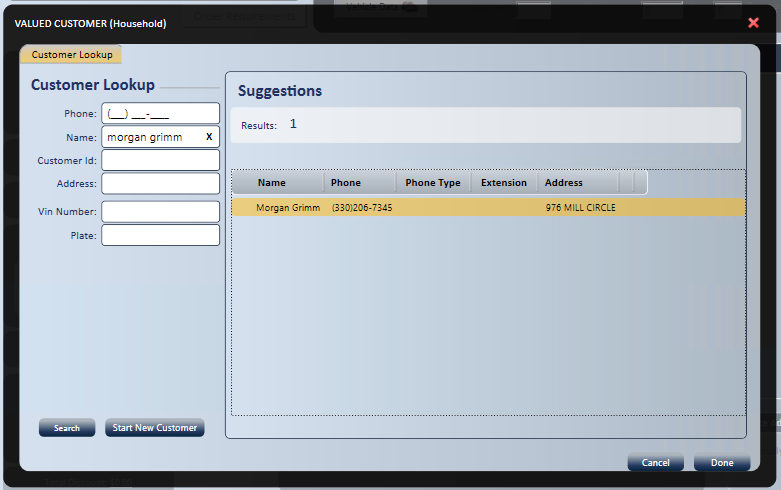
- In Customer Lookup, enter any one or combination of the lookup fields to search TireWorks HD customer records. TireWorks HD searches the customer file for a match based on the fields you fill in.
- If no results are returned, select to add a new customer. See Add a new customer below.
- Enter the new customer's information.
- The customer information screen opens so you can verify the customer and select or create a vehicle.
- Select Done. The customer displays on the service request automatically.
- If the customer is found, highlight the customer and select Done.
- The customer information screen opens so you can verify the customer and select or create a vehicle.
- Select Done. The customer displays on the service request automatically.
Add a new customer
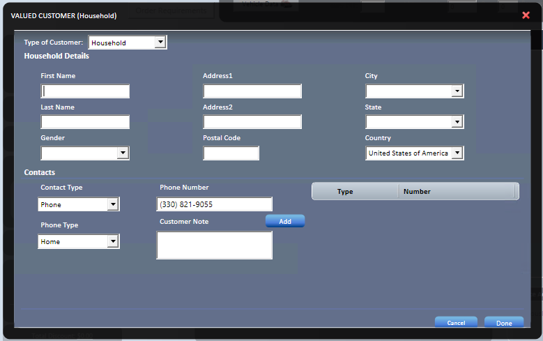
- Select the Customer Type: Household or Business.
- Household lets you add several members, along with their vehicles, to one account. History is kept in the main household account.
- Enter the name and address information.
- Enter the contact information.
- Select the Contact Type and Phone Type.
- Select Add. The number is added to the phone number list as the default.
- To change the default, select the green check mark to the left of the contact type.
- To delete a number, select the red minus symbol to the left of the contact type.
- Select Done.
- The Customer ID is generated automatically from set criteria, for example the first few characters of the last name, the store number and the number of times that ID has been used.
- The customer displays on the service request automatically.
Add a number for text messages
Add a text contact so you can send the customer texts . When your company uses two-way texting, customers can reply, and their replies show in the SMS Hub (see Customer Communication). If your company is not set up for two-way texting, texts are one-way and customers cannot reply.
- Select the Contact Type Text. A Phone contact with Phone Type Cell can also receive texts.
- Select the Cell Provider. This field displays, and is needed, only when your company is not set up for two-way texting.
- Enter the cell number.
- Select Add. The number is added to the phone number list.
- The number displays on the service request as a send text icon.
View and edit customer information
After you find or create the customer, select the customer (in white) on the left side of the service request to view the customer information.
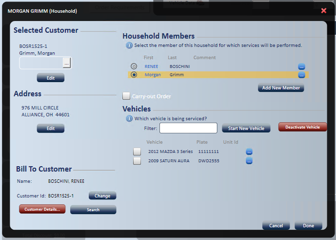
- Selected Customer: lets you edit member details: First Name, Last Name, Gender and Contact Information.
- Address: lets you edit address information.
- Bill To Customer: lets you change the Bill To Customer without changing the customer the services are performed for.
Select to view or edit the customer's details. What you can see and change depends on your access rights. The customer record has these tabs:
- General: the salesperson assigned, credit limit, payment terms and similar settings.
- Members: household members, their contact information and comments.
- Addresses: address information. A customer may have more than one address.
- Vehicle: vehicle information.
- Customer Rules: additional customer pricing, if required, on top of the store's default price level.
- Order History: the customer's order history and summary information.
- To view archived history, select .
- Financial Summary: for an accounts receivable customer, shows current and past-due amounts, and lets you view open receivables and all transactions.
The customer information panel also includes:
- Household Members: select the right household member, or add a new member.
- Carry-out Order: marks the order as carry-out, so package information is not added automatically.
- Vehicles: select an existing vehicle for the order, start a new vehicle, or deactivate a vehicle. Deactivating a vehicle does not remove its history. Use the filter for longer vehicle lists.
Note: To assign a special program at the member or vehicle level, select the ellipses to the right of the member name or vehicle.
Add a new vehicle
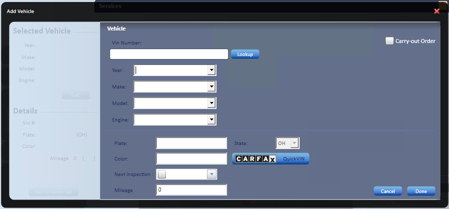
- Enter the vehicle information using one of these three options.
- Plate: enter the plate number, select the state and select . The state defaults to the servicing store's state. If a match is found, all vehicle information fills in automatically.
- Enter the color and next inspection if you know them. You can fill these in later.
- VIN: enter the VIN and select to fill in the vehicle information automatically.
- Enter the plate, color and next inspection. You can fill these in later.
- By hand: enter the year, make, model and engine yourself, when the VIN or plate is not known.
- Enter the plate, color and next inspection. You can fill these in later.
- Plate: enter the plate number, select the state and select . The state defaults to the servicing store's state. If a match is found, all vehicle information fills in automatically.
Note: Year, Make, Model and Engine are required. At stores that use the TireGuide catalog, the fourth field is Option (trim or submodel) instead of Engine.
Keep these vehicle field rules in mind:
- Mileage: shows the vehicle's last recorded mileage and cannot be typed over. To change it, select Set to open Update Mileage, and then enter the Correct Mileage.
- VIN: takes letters and numbers only. A VIN lookup needs at least 11 characters.
- CARFAX QuickVin: if it returns more than one vehicle, pick the right one from the list.
Note: A vehicle typed in by hand, rather than picked from the catalog lists, can still be used, but the F2 Parts and Labor tabs cannot be used for it.
View and edit vehicle information
Select the vehicle (in white) on the left side of the service request to view its information.
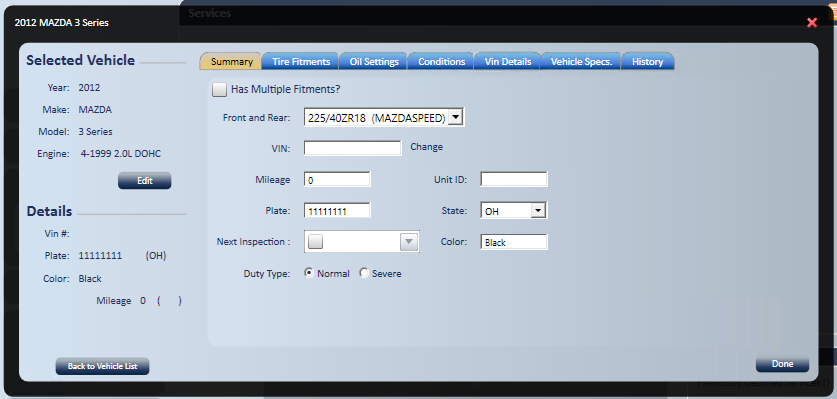
- Selected Vehicle: shows the vehicle the vehicle data is for.
- Select to edit the vehicle information.
- Details: lists the vehicle's details. You can edit them on the Summary tab.
- Summary tab: shows the vehicle's details and lets you edit them.
- If the vehicle has multiple (staggered) fitments, check the box, and front and rear selection boxes display.
- Select the front and rear fitment from the drop-down lists, based on the VIN entered.
- Enter the unit ID, if there is one.
- Select the duty type. Normal is selected by default.
- If the VIN is wrong, select Change and enter the correct VIN.
- Tire Fitments tab: shows the fitments available for the vehicle information provided, in more detail. It gives the standard tire size, inflation, rim width, bolt pattern and TPMS information. At stores that use the TireGuide catalog, this tab is Tire Fitment Details.
- Oil Settings tab: lists the recommended oil type, viscosity and capacity. You can also set the customer's requested oil type and viscosity.
- Conditions tab: lists vehicle conditions you may need to gather for proper service, for example automatic transmission, turbo or air conditioning.
- Vin Details tab: lists any details for the VIN.
- Vehicle Specs. tab: lists all vehicle specifications.
- History tab: lists the vehicle's history, which you can print.
- Select to see all vehicle history that has been submitted to Carfax.
- You can also view archived service history from your previous POS system.
If you chose the wrong vehicle, select to return to the vehicle list.
Note: The Oil Settings, Conditions and Vin Details tabs are not shown at stores that use the TireGuide catalog.
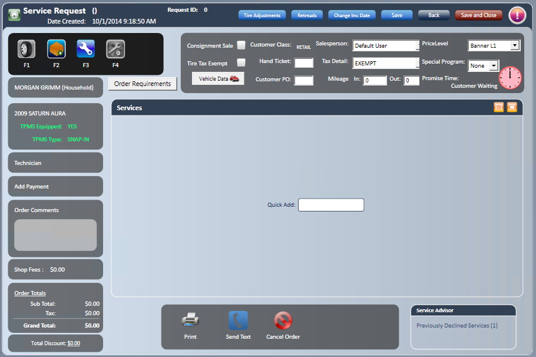
Add tires and services
Select the search that fits what you are adding:
- Tire Search
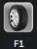
: search for tires. - Package Search
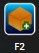
: search for service packages, parts and labor. - Total Inventory Search
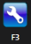
: search your complete inventory. - Add Vehicle: on the F1, F2 and F3 screens, adds a vehicle to the order without closing the screen. The vehicle is assigned to the order right away, so its tire fitment can be used in the search. It is not shown on carry-out orders or on the F4 Diagnosticator.

Tire lookup screen
The tire lookup screen has these fields and columns.
- Global Lookup: a 3-segment universal SKU. Segment 1 is the simple tire size, with no dashes, slashes or letters. Segment 2 is the manufacturer code, generally the first 3 characters of the manufacturer. Segment 3 is the manufacturer item number.
- Show Inactive Tires: search results display all tires, active or inactive.
- Tire Fitment: defaults to the tire fitment selected for the vehicle. You can choose other fitments.
- Speed Rating: defaults based on the tire fitment.
- Price Level: defaults to the store's default, or to the account default for an A/R customer.
- Filter: narrows the search by any part of the description.
- Advanced Filter
 : applies additional filters based on the inventory tree structure.
: applies additional filters based on the inventory tree structure. - Quantity Available: total quantity on hand less committed quantity.
- Warehouse Quantity: warehouse and distributor quantities and price. If there are several warehouses, you can set it to display only the default servicing warehouse.
- ASL Quantity: quantity and price held at all other stores.
- Price: the customer's price, set by the store's default price level or the A/R account price level, plus any additional price rules.
- Tire Detail
 : specs, picture, features, comps and warranty information. This is available only for tires housed in TDC (Tire Data Central), a database of over 105,000 tires.
: specs, picture, features, comps and warranty information. This is available only for tires housed in TDC (Tire Data Central), a database of over 105,000 tires. - Additional Search Filtering: more filters to narrow the search results further.

- Filtering by Item Group: see Item Group Setup and Item Assignment.
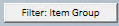
Add tires with Tire Search
If a vehicle and tire fitment are defined in the vehicle information, Tire Search displays only the tires that meet the fitment requirements. Only tires with the minimum speed rating or higher display. If the fitment is not defined or not available, you can use Global Lookup.
- Select (highlight) the tires you want.
- Select Tire Quote (F2) or Add Selected Item (F1).
- Tire Quote adds the tire package automatically unless you specify otherwise in the quote. Select the correct number of tires. The tires and package fill in on the service request.
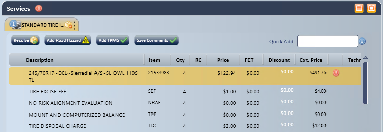
-
- Add Selected Item adds only the selected tires. It is generally used for carry-out or commercial tires.
- If you used Add Selected Item, check the pop-up window, and make changes or add information as needed.
- Price and cost default from the price level and average cost.
- FET fills in if it applies.
- The product code fills in based on special program requirements.
- If you cannot change the Prod. Code on a special program order, your access rights do not allow it (Special Program: Service Request - Prod. Code).
- You can set the technician and actual hours.
- The package fills in based on the store's tire package default.
- The profit meter shows the Profit %. Move the profit bar to change the price to the profit % you want.
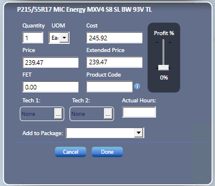
-
-
- You can also click anywhere on the GP% meter to jump to that profit %.
- Your access rights can limit price changes:
- Raising a price beyond what your user's hand pricing allows needs Service Request - Price Increase.
- Going below the minimum profit percent set for your user needs Service Request - Bypass Price Validation.
- If you cannot change prices by hand, Calculate can still save a new price, but only if you have Item Detail Popup - Calculate Increase or Calculate Decrease.
- The item description can be changed only for SKU types set up to allow it (for California BAR compliance), or by users with Service Request - Item Description.
-
- Select Done. The item fills in on the service request.
View item details and time logs
To see an item's full information later, hover to the left of the line and select Item Detail (the blue "i").
The Item Detail window has these tabs: Item Detail, Core, Pricing, Site Detail, On Order, User Defined, Item History, Supplier Info, Item Allocation, Item Movement and Unit of Measurement.
Note: Each tab needs its own access right, so you may not see all of them.
In the line item window, View Time Log next to Actual Hours shows each technician's start and end times, total time and stop reason.
Approve, decline or delete a tire package
- Hover over on the tire package tab , and select approve package.
- The informational "i" is replaced with a green check mark, showing that the customer approved the package (Ready For Work status).
To decline the package later, use the same method and select decline package.
To delete the package completely, select the minus sign on the right side of the package tab, and then answer Yes in the confirmation window.
The tire package tab also has these options:
- : select it if you want it, or set it up to be added automatically.
- : available if a TPMS package has been created.
- : if the tires are not available, select it to source the items. See Sourcing Manager.
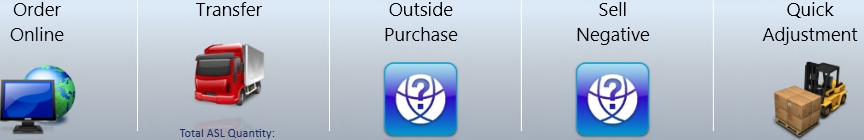
Add a service package with Package Search
- Select Package Search, and then select the Service Package tab.
- Enter the package type, for example oil or brakes.
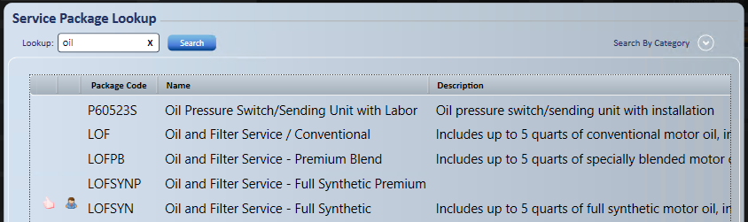
-
- marks a customer preference.
- marks a package recommended by Epicor.
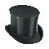
marks the last service performed.
- Double-click the package you want.
- If your store uses Epicor ISE and the catalog asks vehicle condition questions, answer each one. There is no Cancel. A question left unanswered is set to "don't know" where that answer is allowed.
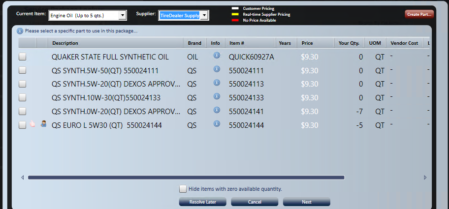
- Select the supplier.
- If your store uses Epicor ISE, a supplier's alternate store is listed as its own line, named "[Seller] - [Alt. Location]".
- The Your Qty. column shows what is in your store's inventory.
- Price column colors follow the legend on the screen: white is Customer Pricing (your store's price for items you stock), yellow is Real-time Supplier Pricing, and red is No Price Available.
- Supplier pricing displays in the Vendor Cost column.
- To hide items with zero available quantity, select .
- Check the item you prefer, and then select .
Note: Double-clicking a part or labor item does not add it. Check the item, and then select Done.
-
- The next item to select displays. Repeat the steps above for it.
- Select Done.
- The message "package successfully added to service request" displays, and the service request shows a new tab for the service package.
If items are not available in your inventory, select to source them. See Sourcing Manager.
Add parts with Parts Search
Before you start: The Parts and Labor tabs are not shown at stores that use the TireGuide catalog, and cannot be used for a vehicle typed in by hand. See the note under Add parts by hand (F2) in Quotes.
- Select Parts Search, and then select the Parts tab.
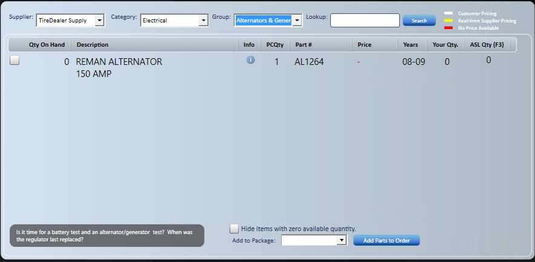
- Select the Supplier from the drop-down list.
- Select the Category and Group.
- Check the box of the part you want.
- Add the part to the service request in one of two ways:
- To add it on its own, select , verify or enter the cost, and then select Done. The part is added under the miscellaneous service tab.
- To add it to an existing package, select , select the package from the drop-down list, verify or enter the cost, and then select Done. The part is added to that package. This is generally used when a Miscellaneous Service Package already exists.
Add labor with Labor Search
- Select Labor Search, and then select the Labor tab.
- Follow the same steps as for parts.
Create a non-catalog part
Use Create Part to create a non-catalog part record, assign it to the right nodes of the inventory tree and set up its part information.
- Select the Create Part icon.
- Select the right value from the drop-down list for each node.
- Enter the part information.
- Select the Create Part icon.
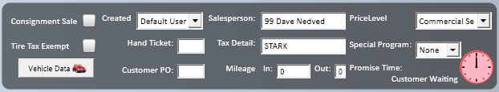
Header information
The header of the service request holds these fields.
- Consignment sale: check this if the sale is a consignment sale.
- Tire Tax Exempt: check this if tires on this order are tax exempt. For an A/R customer, it defaults from the customer record settings.
- Vehicle Data: enter insurance and tread depth information. It can be made a required field (see Order Validation). Vehicle Data holds Insurer Name, Policy # and Dually Vehicle?, plus the Tire Tread Depth (Outer, Mid and Inner for each tire), Tire Inflation and Brakes tabs. It is available only when a vehicle is on the order, so it cannot be used on carry-out orders.
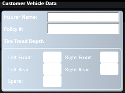
- Created: defaults to the user logged in. You can change it from the drop-down list.
- Hand Ticket: enter the number if you use Road Service Hand Tickets as a reference.
- Customer PO: enter a purchase order number if you want. It is required when the A/R customer's record flags the PO as required.
- Salesperson: defaults to the user logged in, unless the A/R customer has a default set in the customer record. You can change it from the drop-down list.
- Tax Detail: defaults to the store's tax rate, unless the A/R customer has a tax rate set in the customer record. You can change it from the drop-down list.
- Mileage in: and out:: enter Mileage In. Mileage Out defaults to the same value.
- When Mileage In is filled in, becomes available. See below.
- Mileage In and Out can be entered only when a vehicle is on the order. Removing the vehicle clears them. You are prompted if the Mileage Out you enter is not valid.
- Price Level: defaults to the store's price level, unless the A/R customer has a price level set in the customer record.
- Special Program: select a special program, such as Goodyear National Accounts. You are asked questions about the program and shown its requirements. If the program has its own price level, the order's price level changes to it. The order is processed through to the manufacturer of the national account program. Select Order Requirements to see and answer the program's requirements on the order.
- Promise Time: the completion time promised to the customer. It can be set to display on the service request.
- The time filled in on a new order depends on your store's settings, for example Customer Waiting, the current time, a set number of minutes later, or a set time of day. It may also add the service duration of the work on the order.
- Unchecking Customer Waiting clears the Promise Time.
Look up symptoms with the Diagnosticator
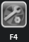
Before you start: F4 Diagnosticator and F6 Factory Scheduled Maintenance are not shown at stores that use the TireGuide catalog. F4 is also hidden on Goodyear National Account orders.
- Select the Diagnosticator icon, or press F4.
- Enter the symptom.
- Recommended diagnostics display.
Get factory scheduled maintenance
Factory Scheduled Maintenance suggests maintenance based on the vehicle's current mileage.
- Select FSM, or press F6.
- Fill in the vehicle conditions if required. You can also fill them in on the vehicle record.
- Select Done.
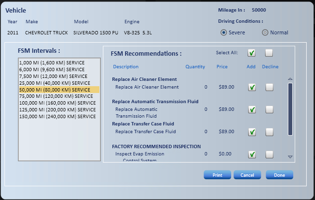
-
- Recommendations display, highlighted based on the Mileage In entry.
- You can switch Driving Conditions between Severe and Normal. You can also set this on the vehicle record.
- By default, all recommendations are selected to be added.
- You can print or cancel the recommendations without affecting the order.
- Select, add or decline services based on the customer's preference.
- Added services show on the service request as individual tabs, one per service.
- All declined services display in one tab and print on page 2 of the invoice.
- Declined services are also visible on the customer's future orders. You can also see the declined services for other vehicles in the household, and create an appointment for them.
Review services with Service Advisor
When a vehicle is on the order, the Service Advisor panel on the service request shows counts of Recommended Services, TCS Inspect Recommendations, Previously Declined Services and any Carfax Recalls.
- Select Service Advisor to open the TireWorks HD Advisor window.
- The Current Vehicle tab lists Recommended Services, TCS Inspect Recommendations, Previously Declined Services and Reported Recall(s) for the vehicle.
- Each service shows its Last Date, Last Mileage and Package Price. For a declined service, the price is what it was when the customer declined it.
- The Current Vehicle tab lists Recommended Services, TCS Inspect Recommendations, Previously Declined Services and Reported Recall(s) for the vehicle.
- For each service, choose one of these:
- Add to Order
- Add As Declined
- Don't Ask Again: the service stops being suggested for this vehicle.
- Schedule Future Appointment
- To see recommended and declined services for the customer's other vehicles, select the Household Vehicles tab. Select Load more vehicles... to see more.
- Select Done to apply your choices, or select Cancel.
Note: A declined service drops off Previously Declined Services once it is invoiced at the same store, added to an order, or marked Don't Ask Again.
Assign technicians
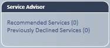
You can assign technicians to the service request as a whole or to single line items. You can select up to two technicians per line item (Tech. 1 and Tech. 2), or four if your company has that option turned on.
Note: You can change technicians freely on an open order. Changing them on a closed order needs the Service Request - Technician Assignments access right.
- Select Technician (in white) on the left side of the service request .
- Highlight the line to assign technicians to.
- Select the technicians from the drop-down lists.
- Select Done.
Add order comments
Order comments apply to the whole order. Public comments print. Private comments stay with the order and do not print.
Before you start: Seeing and editing the comment boxes needs the Service Request - Order Public Comments or Order Private Comments access right. If you cannot see or edit a comment box, your access rights do not allow it. Users with EDIT on those rights can also add or change order comments on closed and invoiced orders.
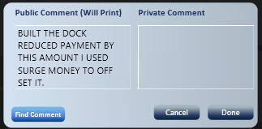
- Select Order Comments (in white) on the left side of the service request .
- Enter the comments in the right section.
- Select Done.
Tip: Use Find Comments to pick commonly used comments, so you do not have to type them. See Comment Setup & Maintenance.
Change shop fees
Shop fees can be order based, package based, or not used at all. They are set as a percentage, with an optional minimum fee, maximum fee or both. Fees can be charged on parts, labor or both, and can be taxable, discountable or both.
Note: Managers set up shop fees for each store at Manage; Company Setup; Other Fees & Charges, Shop Fees tab. Copy Shop Fee Settings copies a finished setup to other stores.
You can change the shop fee from its default on any order.
- Select Shop Fees (in white) on the left side of the service request .
- Enter the charge you want, or 0.00, and select Freeze
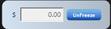
.
Note: Changing or freezing the shop fee needs EDIT on the Service Request - Shop Fee access right.
Review order totals
Order Totals shows the order subtotal and tax, and the GP for Tires, Other and the Order. The GP meters update right away when a discount is added to the order.
- Select Order Totals (in white) on the left side of the service request.
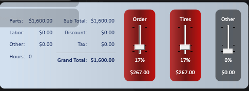
Add a discount to a service request
You can apply a discount to the service request as a whole or to any single line item.
- Select $0.00 (in white) on the left side of the service request.
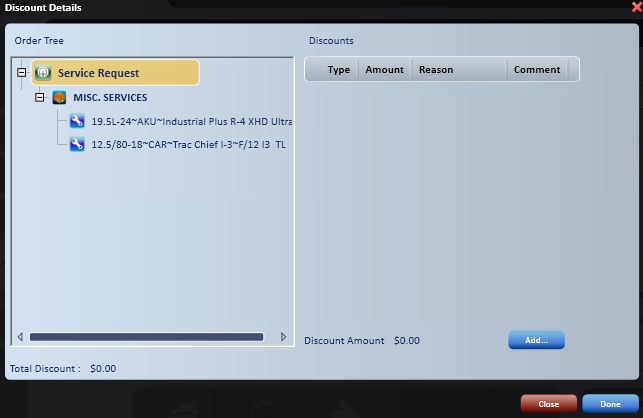
- Highlight the level for the discount:
- The service request as a whole.
- Any line items individually.
- Select Add....
- Select the Discount Type from the drop-down list: Flat Discount or Percentage Discount.
- Enter the amount.
- Select the Reason Code . See Discount Maintenance.
- Add comments if you want. They are not required.
- Select Done.
- Select Done in the discount details window too.
- The discount displays in the discount column on the lines it applies to, based on the level you chose. It also displays in the discount box on the left and at Pkg. Discount in the body of the service request.
Note: Discounts and coupons of different classes do not stack. The one that gives the customer the greatest benefit is used. Coupons of the same class can be combined.
When you select Add Payment, discounts and coupons that have expired or been made inactive are checked:
- Users with the Service Request - Expired Discount access right are asked "Would you still like to allow this discount or coupon to be used?"
- Everyone else is told the discount or coupon will be removed and the order total will change.
- Discounts and coupons marked Honor After Expiration are not removed.
Complete the order
Select Complete Order to mark the work as done and set the order to Work Complete. You do not have to complete the order before Add Payment.
To reopen a Work Complete order, select Revise Order. The order returns to Ready For Work.
Check the validation icon
The validation icon in the top-right corner shows whether the order meets its validation and sourcing requirements. This is separate from the order status. See Order statuses below.
- : the order is in good status and is ready for payment collection and invoicing.
- : the order is incomplete and cannot be completed until its requirements are met. Select the icon to see the unfulfilled requirements, then fill in the required information or complete the required tasks.
- ?: the order is missing validation requirements only.
Take payment and invoice the order
When the order is finished, use Add Payment to collect payment, convert the order to an invoice, and print or email the invoice. The order is then Closed.
- Select Add Payment (in white) on the left side of the service request .
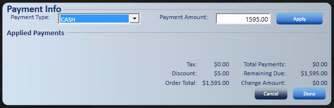
-
- If a customer deposit was taken, it may be listed on the payment screen
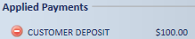
. See Customer Deposit.
- If a customer deposit was taken, it may be listed on the payment screen
- Select the payment type from the drop-down list.
- Store Account does not display for household customers, business customers with a $0 credit limit, or customers who are past due or set to No House Credit.
- Customers set to Cash Only can pay by cash only.
- Enter the payment amount.
- Select Apply.
- If the customer is paying with more than one payment type, repeat until the remaining due is $0.
- Select Done.
- "Remaining Due is $0.00, Would you like to Complete this Order now?" displays.
- Select Yes.
- The invoice displays so you can print or email it.
- The default printer, number of copies and print options can also be set at the user level.
- The invoice displays so you can print or email it.
Note: When the System Setting Suppress Confirm Complete Order Dialog is on, Add Payment works differently. Add Payment opens only after all Block order validations are met and all items are sourced and received. The Done button reads Invoice Order, and selecting it invoices the order right away with no confirmation. Card payments are processed when you select Invoice Order. Payments cannot be saved without invoicing: closing the payment screen asks you to confirm, then removes all payments except Customer Deposits and Text-to-Pay link payments.
Order statuses
Every order has a status that shows where it is in the workflow. The status displays on the order and in order search results.
Service Request statuses are set for you. Each package on the order has its own status, and the order shows the least advanced status of any package on it. For example, one package waiting on a part keeps the whole order at Waiting For Parts.
Quick Quote, Appointment, Work Complete, Closed, Memo, Declined and Canceled come from an action you take instead.
Status names can be changed for each store on the OrderState Labels tab (see Locations Setup and Maintenance). The names below are the defaults. Status numbers are listed in the Appendix.
- Quick Quote: the order was started from Quick Quote. It stays a Quick Quote until it is converted.
- Appointment: the order was created from the Appointment Calendar. It stays an Appointment until it is converted to a service request.
- Open: a tire or catalog part still needs to be resolved before its package can be approved. Also shown when every package left on the order has been declined.
- Estimate: services are added but not yet approved by the customer.
- Approved: the customer approved the work, but at least one item still needs to be sourced.
- Waiting For Parts: at least one item is on a purchase order or transfer that has not been fully received.
- Ready For Work: every approved item is in hand: in stock, received, or not needing sourcing. Revise Order also returns a Work Complete order to this status.
- Work Complete: Complete Order was selected. The work is done and the order is ready for Add Payment. The order is still editable, and Revise Order reopens it.
- Revised: a Work Complete order that was changed afterward. This is mostly seen on older orders. Revise Order now returns an order to Ready For Work instead.
- Closed: payment was added and the invoice created. The order cannot be edited, but it can be copied or reversed (see Invoice Reversal and Copy).
- Memo: the order was saved as a memo instead of an invoice. This happens at Add Payment when every line left on the order is a fee with no price and no cost.
- Declined: every package on the order was declined. This is set when you save and answer Yes to "The Order contains only declined services. Do you want to decline the order?"
- Canceled: the order was canceled with Cancel Order.
Toolbar and line item tools
The service request toolbar and line items have these other tools.
- Save : saves the order. Save periodically as you work.
- Save and Close : saves the order, closes it and returns to the Home Page.
- Back : returns to the Home Page.
- : adds a whole string of information for a commonly used SKU (for example, PUMP, 2, 25.00) and fills in the complete line.
- Add Comment: hover to the left of a line item and select the comment icon. The comment window has a Public box, which prints, and a Private box, which is kept with the order and does not print. If you cannot see or edit one of the boxes, your access rights do not allow it (Service Request - Line Item Public Comments or Line Item Private Comments).
Delete a line
- Hover to the left of the line item and select the red circled minus sign.
- Confirm that you want to delete the line.
- If the line is on an open or partially received purchase order, the Associated PO window displays the PO number, status, vendor and SKUs. Choose how to handle the PO:
- Complete PO: creates and processes an inventory receipt for any unreceived items.
- Cancel PO: cancels the open purchase order. For open POs only.
- Close PO: changes the purchase order quantities to show as fully received. For partially received POs only.
- Disassociate PO: unlinks the purchase order from this service request.
Note: The same window displays when you delete or decline a package, or cancel the order, when it has a line on an open PO.
Note: Each choice needs its access right: Service Request - Complete PO/PO Items Linked to SR, Service Request - Cancel PO/PO Items Linked to SR, Service Request - Disassociate PO/PO Items Linked to SR, and for Close PO both Service Request - Close PO/PO Items Linked to SR and Purchase Orders - Close PO. Users without any of these rights see a message to contact the system administrator, and the line is not deleted.
View item details from the order
Hover to the left of a line item and select the blue "i" to see the item's full inventory information. See View item details and time logs above.
Enter DOT numbers
- Double-click the tire line item and select the DOT number icon .
- The Add/Edit DoT Number icon also shows when you hover to the left of a tire line.
- In Edit DoT Numbers, enter the DOT number for each tire.
- Use the copy buttons to copy the previous value, or to copy the first value to all tires.
- If your store uses TireMetrix TRP, select Search Base DOT# to pick from the base DOT numbers TireMetrix suggests, then enter the 4-digit date code. If the tire was made at more than one plant, you are reminded to use the correct base DOT number.
- If your store requires valid DOT numbers, Done is blocked with "You must enter a valid DOT Number to continue." until the number is valid.
Note: Changing DOT numbers on a closed order needs the Service Request - Change DoT Numbers access right.
Cancel an order
- Select Cancel Order .
- You are asked "Are you sure you want to cancel this Service Request?"
- If the order has a payment or deposit applied:
- Users with the Cancel Orders with Applied Payments access right are warned that canceling may require a refund to the customer, and can continue.
- Everyone else sees that the order cannot be canceled and should contact a supervisor.
- If the order has a line on an open purchase order, the Associated PO window displays. See Delete a line above.
More service request tools
- : gives a quote without leaving the service request.
- Print : prints the service request.
- ... (next to Save): opens Tire Adjustments, Retreads, Change Inv. Date and View Audit History. View Audit History shows who opened, saved and closed the order, and when discounts were added or removed.
- : shows packages in tab view, list view or service request view.
Tip: When you hover in the service request, anything that shows a hand, an underline or blue text has more functionality under your cursor.